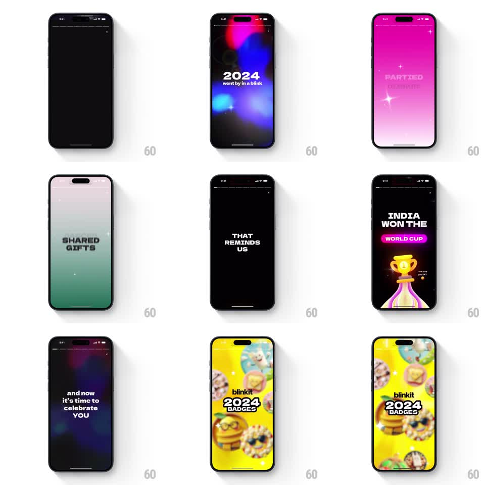

Media
Frame-by-frame

Rebuild this animation 1:1: Blinkit's 2024 badges intro - an auto-playing story sequence where bold typography lands over morphing color fields, building to the yellow badges reveal.

Rebuild this animation 1:1: Blinkit's 2024 badges intro - an auto-playing story sequence where bold typography lands over morphing color fields, building to the yellow badges reveal. ## Integration Integration: stack-agnostic spec - springs given as stiffness/damping, timed motions as duration + curve; map every value to your framework and animation library of choice. ## Scene Full-screen story format with a progress bar on top. Beats: dark gradient blobs with "2024 - went by in a blink", magenta field with "PARTIED", green field with "SHARED GIFTS", black with "THAT REMINDS US", a trophy scene with "INDIA WON THE WORLD CUP", dark with "and now it's time to celebrate YOU", then the yellow "blinkit 2024 BADGES" card crowded with floating 3D badge characters. ## Motion spec Pattern: story sequence with color morphs and typographic slams, ~2s per beat. - Each beat's background color field wipes or crossfades in from the previous (400ms); gradient blobs drift slowly behind the text (6s ambient float). - Headlines slam in word by word: each word scales from 1.4 to 1 (spring stiffness 400 damping 15) with a 90ms stagger between words. - The trophy rises from the bottom with a spring (stiffness 280 damping 16) while sparkles pop around it (scale 0 to 1, 200ms, random stagger). - The final card: background floods yellow (400ms), the "2024 BADGES" logo locks up center (scale 0.6 to 1, stiffness 340 damping 14), and the 3D badge characters float in from the edges (spring stiffness 260 damping 15, 100ms stagger) and idle-drift in place. - The top progress bar fills beat by beat, each segment animating its fill across the beat's duration. ## Calibration - Word slams land hard and settle fast - no floaty ease-outs. - Every color morph is full-bleed; no hard edges between beats. ## Reduced motion Beats crossfade; text and badges appear assembled. ## Don't miss - The final card's characters keep drifting after landing - the scene never freezes. - The trophy beat is the tonal pivot: it is the only beat with a literal object instead of pure type.